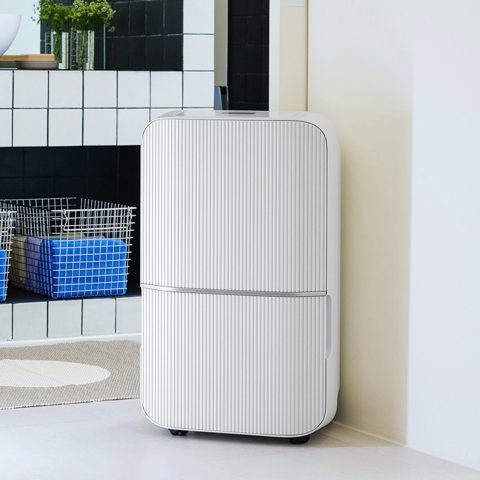

1위 위닉스 뽀송 인버터 제습기 22L
429,000원 · 검증 리뷰 15,538건 · 별점 4.89
제습량 22L · 소비전력 340W · 에너지 1등급
리뷰에서 좋았던 점
- 제습 속도가 빠르다는 리뷰가 있습니다
- 물통이 커서 자주 안 비워도 된다는 리뷰가 있습니다
- 저소음 모드가 바깥 소리에 묻힌다는 리뷰가 있습니다
아쉬운 점
- 429,000원으로 다섯 중 가장 비쌉니다
이런 분께: 넓은 집에 한 대로 맡기실 분 · 빨래·신발 건조까지 쓰실 분 · 전기세가 신경 쓰이시는 분
네이버에서 지금 가격 보기